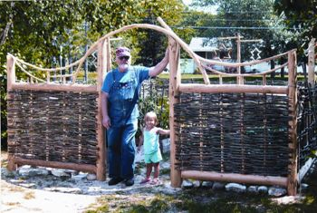

This fence surrounds my herb garden. It is made of cedar posts and branches, and willow whips that grow in the ditches of upper Michigan. I am in the process of making a gate. I also have made trellises, tomato cages and a woodshed in this wattle-work tradition.
I was very interested in the article by Barbara Pleasant, Make Simple, Beautiful Garden Fences and Trellises.
|
 JIM MORRISON This natural-material fence of willow and cedar posts is an attractive addition to any yard. |
|
|